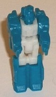
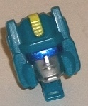
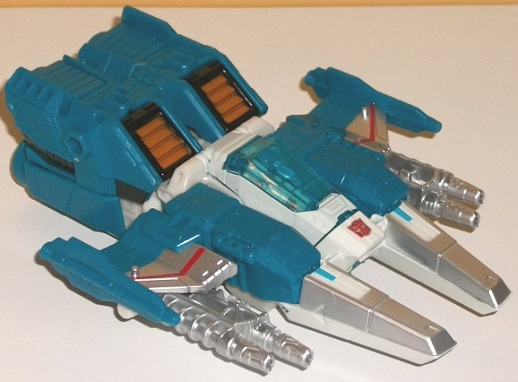
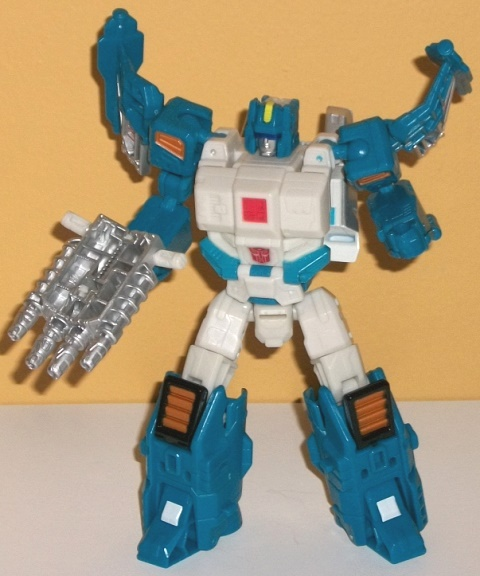

Allegiances
: Autobot
Size
: Deluxe
Difficulty of Transformation
: Medium
Color Scheme:
Milky off-white, moderately
dark turquoise, and some silver, black, metallic copper, transparent pale
blue, dark metallic blue, pale light yellow, and red
Rating
: 9.7


Topspin didn't have
a Headmaster (or any -master) in G1, so his Titan Master Freezeout's robot
mode is essentially mini-Topspin in Titan Master proportions. He has the
same fairly square helmet around the face, which has a normal mouth and
an optical visor with a slight indentation for the nose. There's also a
square in the middle of the chest, just like on Topspin's robot mode, angular
details on the shoulders, and fairly average details on the arms and legs.
(That is, regular fists are mostly molded into the inside of the arms,
and there's some vague square-ish details on the legs, but there's nothing
extraordinary worth pointing out there.) As is the case with most Titan
Masters, unfortunately Freezeout has no paint at all in robot mode to bring
out any of these intricate mold details, though the color breakup-- off-white
on the upper legs and chest, and a somewhat dark turquoise everywhere else--
is the same color breakup as Topspin in robot mode. For articulation, Freezeout
can move at the head, shoulders, hips, and knees (with the latter two moving
as one for both legs, given that they're pinned or molded together). In
head mode Freezeout looks pretty dynamite as Topspin's head, with the side
antennae, a sloped forehead with a yellow ridged detail/paint app in the
middle of it that has a "rim" like a cap above the actual face. The face
itself is painted silver with a really nice dark metallic blue used for
the visor. Really, that dark metallic blue is byoo-ti-ful-- I wish it was
used elsewhere on the toy. Given that the rest of the sides of the head
are also turquoise just like the front, there isn't as much of an odd color
mis-match near the back of the head as is the case with some other Titan
Masters.


Just like his original
G1 toy, this version of Topspin is a futuristic spacecraft... thing. Behind
the various basic properties of having a cockpit and wings, as well as
thrusters in the back, pretty much anything else about the mode is pretty
much there "because it was on the G1 toy". That said, there are subpar,
lazy Cybertronian modes and there's Cybertronian modes like this one, which
are pretty solid. Other than just a HINT of the hips near the bottom of
the back section if you look at him from the side view, There's really
no robot mode extras at all. From the back end there's a notable gap in
between the two halves of the thrusters, but it's only really obvious from
a verrrry specific angle, and so I don't really mind it much. Overall it's
a pretty unique mode; a large cockpit in the center with two large "nosecone-like"
silver bits on the front, wings that proportionally are rather small but
otherwise look great, and a bit ol' back section with intake vents near
the front and thrusters near the back. The color scheme is mostly a fairly
dark turquoise in this mode, which is a pretty decent plastic color and
mostly offset by both white and silver paint apps. All that silver near
the front looks great and shiny, and the white and blue really contrast
against each other quite well. The mold detailing is very well-done, with
vents, little armor panels, aerodynamic lines, and the like on most of
the toy that's not those front two nosecone-like things. As for accent
colors, there's a pale transparent blue used for the cockpit (which of
course Freezeout can sit inside) and is a decent match for the main blue
color. There's also red lines along the wings and black and copper detailing
on the intake vents near the back section, along with a broken black line
along the side of said back section. Topspin has a flip-down landing gear
for the front (he doesn't need one for the back). He also has two silver
guns, each of which are dual-barreled and fit under the wings in this mode,
and which combined together can theoretically have a Titan Master sit in
the middle of them; however, the tab for the Titan Master to fit in is
just a BIT too large for that, so they can flop out of their seat easily.
There's two pegs for Titan Masters to peg into in this mode-- on the top
of each wing.
Topspin's transformation
isn't that complex, but it's absolutely ingenious. It takes the flip-the-waist-while
rotating it portion of
Triggerhappy's
transformation and adds in a a nice folding back of the front section,
and a folding and sliding out of the arms and legs. G1 Topspin had a spring-loaded,
very simple transformation; this one definitely doesn't, but/and (depending
upon your point of view) the end result is stunning. Topspin's robot mode
is exceptionally well-done, with very good proportions all over-- his upper
legs are slightly on the chunky side compared to other deluxe TFs, but
still within normal parameters. The only real extras are the dual nosecone
pieces behind his back and the cockpit, which unfortunately doesn't lock
in completely and hangs behind the back a bit. That said, they don't stick
out much, so I consider them minor extras. The wings hang off the shoulders,
but they help the silhouette, so I don't mind them at all as they make
Topspin look more unique in this mode. There's also plenty of nice robotic
details in this mode as well, such as circuitry-esque lines on the wings,
armor bits and bobs on the arms and waist, and asymmetrical blocky details
on the chest. The off-white plays a much bigger role in the color scheme
of this mode, being most of the main body and the upper legs, while the
aquamarine "frames" that white pretty well. As for paint apps unique to
this mode, you've got bronze on the shoulders; more silver and red on the
shoulder wings; bits of red and blue paint on the chest; and white squares
on the feet. Overall the colors are broken up pretty darned well with no
one large section of an unbroken color. Topspin's articulation is STELLAR:
he can move at the neck, shoulders (at two points; three if you include
the wings), elbows (at two points), waist rotation, and movement at the
hips, knees (at two points), and up-and-down movement at the toes. For
a deluxe-class toy, I don't know how much more you can reasonably expect.
He's also well-balanced, so he can pull off a TON of great poses.
Titans Return Topspin
is just stellar all-around. He's got a few VERY minor downsides-- like
the twin nosecones and cockpit behind his back in robot mode-- but otherwise
he's an incredibly solid toy in both modes. Solid proportions, tons of
articulation in robot mode, a well-broken up color scheme with a good number
of paint apps, a futuristic alt mode that is NOT lazy in its design, a
very innovative transformation-- my favorite of all the Titans Return deluxes.
HIGHLY recommended.
Review by Beastbot